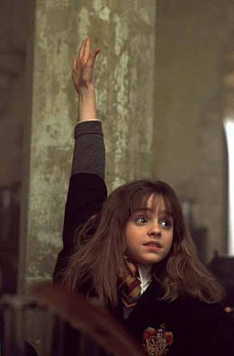

어린 나이부터 각종 학교 연극에서 일찍이 두각을 나타냈지만 〈해리 포터와 마법사의 돌〉을 통해 본격적인 프로 연기자로 첫 데뷔했다. 다섯 살 때까지 프랑스에서 살다가 영국으로 이주했다. 7살 때 학교에서 주최한 DAISY PRATT 시낭송 대회에서 학년 최우수상을 수상했다. 그후 학교 연극 〈 ARTHUR:THE YOUNG YEARS〉에서 모건 라 페이 역을 맡았으며 〈 THE HAPPY PRINCE〉에서 주요 배역을 맡았다. 연기 외에도 하키에 소질이 있어, 최근 학교 하키팀 선수로 선발되었다. 라운더스(야구의 일종)와 네트볼도 좋아하며 다양한 학교 체육활동에 활발히 참여했다. 2001년<해리포터와 마법사의 돌>부터 2011년<해리포터와 죽음의 성물2>까지 약 10년간 헤르미온느 그레인저를 연기했고, ‘해리 포터’시리즈를 통해 벌어들인 영화출연료와 광고수입만도 2200만 파운드(한화 약 380억원)가 넘는다고 한다. 해리포터 시리즈 이후 2012년 동명 소설을 영화화 한 <월플라워>에서 자유롭지만 한편으로는 외로움을 지닌 '샘' 역과, 2013년 실화를 바탕으로 한 영화<블링 링>에서 거침없고 허세 가득한 10대 절도범 '니키'역으로 이미지 탈피를 하며 한층 성장한 연기를 보여주었다.
